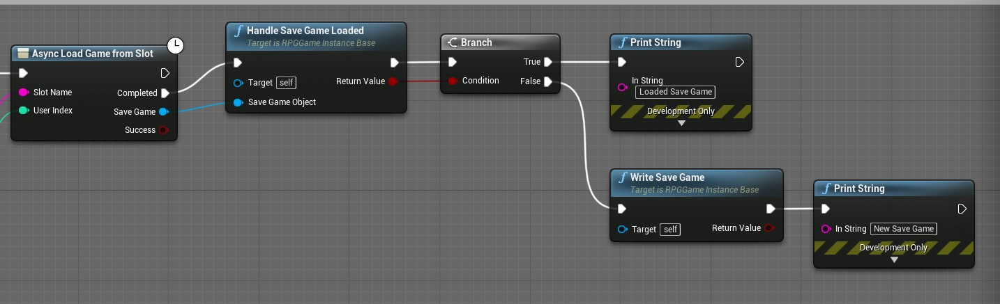

今天我们来聊聊UE4提供的一个开源工程-ActionRPG，一句话形容就是，浑身都是宝。
首先是先对ActionRPG有些了解
应该配合视频更好，都是一个系列的有时间找一下看看。
LoadScreenModule实现和相关内容
Load Screen Module
首先是UE4的异步加载界面的实现。
其中感觉很重要但是我目前还没有仔细调查的MoviePlayer，不知道是否可以实现Loading界面播片的问题，需要调查。
很不错的介绍AsyncLoadingScreen的视频，还顺便介绍了一个很重要的概念，TransitionLevel
UE4的Slate
UE4deSlate是UMG框架下的一部分。UMG我会在其它文章中介绍具体的使用方法。UI的制作肯定是要用UMG来实现的，但是这里用到Slate的理由是，我们想要实现异步加载界面的实现。
首先UE4的Scene的加载只能在Gam线程中完成，也就是主线程，异步加载界面的实现，而Slate刚好是在别的线程中实现的，至于什么线程我还不清楚…
我想利用这个特性，于是开始了解Slate。当然还有MoviePlayer这个东西。
Slate, Hello
加载界面需要了解UE4的Slate，先上教学：
目前我对Slate的理解也仅限于制作一个简陋的加载界面，还有一些高级的功能没有涉及到。关于如何自己设置项目中的Slate的API使用我就不详细的记录了，只记录一些关键的步骤。
添加模块依赖(貌似默认生成的Build文件中都有，只不过貌似是被注释掉的，如果我没记错的话)：1
PrivateDependencyModuleNames.AddRange(new string[] { "Slate", "SlateCore" });
如何快速输出一个简单的Slate制作的Hello World!`参照代码很快就可以制作出来，为了方便查阅复制到这里吧。代码中的注释解说非常珍贵。
StandardHUD.h
1 |
|
StandardHUD.cpp
1 | // Fill out your copyright notice in the Description page of Project Settings. |
总结来说就是我们在HUD中保持了一个智能指针：TSharedPtr<SStandardSlateWidget> MyUIWidget，SStandardSlateWididget是我们接下来想要创建的Slate的类。然后我们在构造函数中真正创建了这个类。
接下来是真正的对Slate类进行实现了：
StandardSlateWidget.h:1
2
3
4
5
6
7
8
9
10
11
12
13
14
15
16
17
18
19
20
21
22
23
24
25
class HELLOSLATE_API SStandardSlateWidget : public SCompoundWidget
{
public:
SLATE_BEGIN_ARGS(SStandardSlateWidget)
{}
// ++ We add a new argument called OwnerHUDArg
SLATE_ARGUMENT(TWeakObjectPtr<class AStandardHUD>, OwnerHUDArg);
SLATE_END_ARGS()
// Constructs this widget with InArgs. Needed for every widget. Builds this widget and any of it's children
void Construct(const FArguments& InArgs);
private:
// ++ Pointer to our parent HUD. To make sure HUD's lifetime is controlled elsewhere, use "weak" ptr.
// ++ HUD has a "strong" pointer to Widget, circular ownership would prevent/break self-destruction of hud/widget (cause a memory leak).
TWeakObjectPtr<class AStandardHUD> OwnerHUD;
};
上面代码中出现的宏进行说明：
SLATE_BEGIN_ARGS和SLATE_END_ARGS实际上创建了一个包含一些变量(variables)的结构体(struct)，而这些变量则是使用SLATE_ARGUMENT, SLATE_ATTRIBUTE, SLATE_EVENT之类的宏添加的。而添加的变量的名字则是_TheNameYouGaveIt
SLATE_ARGUMENT宏创建你想要类型的变量，SLATE_ARGUMENT(int, MyThing)则是创建了一个int类型的名为_MyThing的变量。
SLATE_ATTRIBUTE宏创建你想要类型的TAttribute，SLATE_ATTRIBUTE(int, MyThing)则是创建了一个TAttribute类型的变量，名为_MyThing
所以说TAttribute是什么类型？我暂时不太清楚TAttribute
除此之外这些宏还基于所给的变量名字定义了Set函数。这一点我没有验证过。
StandardSlateWidget.cpp:1
2
3
4
5
6
7
8
9
10
11
12
13
14
15
16
17
18
19
20
21
22
23
24
25
26
27
28
29
30
31
32
33
34
35
36
37
38
39
40
41
42
43
44
45
BEGIN_SLATE_FUNCTION_BUILD_OPTIMIZATION
// ++ This is needed in order to use the localization macro LOCTEXT
void SStandardSlateWidget::Construct(const FArguments& InArgs)
{
// ++ Asign the argument to our local variable
// name will be _OwnerHUDArg instead of OwnerHUDArg, see comments about SLATE_ARGUMENT before
OwnerHUD = InArgs._OwnerHUDArg;
// ++ Add all this Slate code
// If the code below doesn't look like C++ to you it's because it (sort-of) isn't,
// Slate makes extensive use of the C++ Prerocessor(macros) and operator overloading,
// Epic is trying to make our lives easier, look-up the macro/operator definitions to see why.
ChildSlot
.VAlign(VAlign_Fill)
.HAlign(HAlign_Fill)
[
SNew(SOverlay)
+ SOverlay::Slot()
.VAlign(VAlign_Top)
.HAlign(HAlign_Center)
[
// Inside lies a text block with these settings
SNew(STextBlock)
.ShadowColorAndOpacity(FLinearColor::Black)
.ColorAndOpacity(FLinearColor::Red)
.ShadowOffset(FIntPoint(-1, 1))
.Font(FSlateFontInfo("Veranda", 16))
// localized text to be translated with a generic name HelloSlateText
.Text(LOCTEXT("HelloSlateText", "Hello, Slate!"))
]
];
}
// ++ We need to undefine this namespace after we finish creating the Slate widget
END_SLATE_FUNCTION_BUILD_OPTIMIZATION
如何将外部变量传入Slate内部应该还可以验证，参照上面的各种宏和HUD的参照的传递，应该还有很多可以挖掘的内容，等到想用到的时候再挖吧。
至于文章其他的内容因为很简单就直接省略。
很好的源码参考方式
有一个偏方，就是使用UE4的Widget Reflector工具，直接查看引擎Editor实现的源代码。因为Editor就是用Slate制作的。
Window -> Developer Tools -> Widget Reflector
Window -> Developer Tools -> Debug Tools 中找到 Test Suite
可以发现很多UE4准备好的UI例子，直接抓取源码方便参照。
参考资料
官方参考资料，据官网所说这篇适合反复的阅读
关于Slate的一些实现参考例子，但我还是推荐上面的那种方法。感觉有些枯燥，但是会更加系统的介绍
这里有一篇我无意中发现的文章，使用Slate制作了一点东西，感觉有可能会用的上
拓展
UE4中的Interface
关于UE4或者说C++的一些接口的用法进行一些记录。原本是ActionRPG中的Module开始调查，就先从Module的接口开始说起，不过除了调查这个是什么的接口，更重要的是了解接口的使用方式，不仅仅是UE4中的有重要作用的接口。
C++的接口的一些特性使用方法更为重要。
IModuleInterface
UInterface
UINTERFACE()
UINTERFACE修饰符
FGCObject
AssetManager的Asset管理
除了在上面的ActionRPG的Slide中有提到这个AssetManager之外（需要整理），还有我需要额外参照理解的文章
- [UE4] Asset Managerのアセットの非同期ロード機能について その3 (PrimaryDataAsset, PrimaryAssetLabelはいいぞ編) - Qiita
- UE4 アセットマネージメントフレームワークについて - Let’s Enjoy Unreal Engine
SaveGame存档管理
利用UE4提供的SaveGame类实现游戏的存档管理。
首先需要看一下UE4提供的SaveGame类：
根据上面的类的情报，注释的内容，大概理解了SaveGame的使用方式，和需要使用的函数。
但是我这里着重理解ActionRPG内的实现。还是有一些不同的，SaveGameToSlot和LoadGameFromSlot使用的则是异步版本：AsyncLoadGameFromSlot和AsyncSaveGameToSlot函数。
首先看GameInstance在初始化阶段进行存档的读取的步骤：
Init函数是GameInstance的Native函数，提供了一个供BP实现的版本，实际的函数名字是ReceiveInit，不过无关紧要，只要知道在初始化阶段会被自动调用就行了。
图片有些大只截取了前半部分，先除去不相关的节点，第一步，先是确认是否开启了Save/Load功能，方便我们随时关闭开启存档功能：SetSavingEnable函数。
SetSavingEnable:1
2
3
4
5
6
7/** Sets rather save/load is enabled. If disabled it will always count as a new character */
UFUNCTION(BlueprintCallable, Category = Save)
void SetSavingEnabled(bool bEnabled);
/** Rather it will attempt to actually save to disk */
UPROPERTY()
bool bSavingEnabled;
其实就是控制bSavingEnable变量，很简单的函数。
第二步是取得SaveSlot的情报，主要为了获取想要的SlotName和UserIndex，即GetSavingSlotInfo函数。
第三步，也是我们的核心步骤之一，AsyncLoadGameFromSlot，由于这一步使用了BP，效果就像图片中展示的那样。

第四步，对取得的SaveGame对象进行处理，如果是我们想要的结果，那就采用这个对象，并取出我们想要的数据。如果不是我们想要的结果，那就新建也好，取决于需求。对HandleSaveGameLoaded进行记录：
HandleSaveGameLoaded:1
2
3
4
5
6
7
8
9
10
11
12
13
14
15
16
17
18
19
20
21
22
23
24
25
26
27
28
29
30
31
32
33
34
35
36
37
38// .h
/** Handle the final setup required after loading a USaveGame object using AsyncLoadGameFromSlot. Returns true if it loaded, false if it created one */
UFUNCTION(BlueprintCallable, Category = Save)
bool HandleSaveGameLoaded(USaveGame* SaveGameObject);
// .cpp
bool URPGGameInstanceBase::HandleSaveGameLoaded(USaveGame* SaveGameObject)
{
bool bLoaded = false;
if (!bSavingEnabled)
{
// If saving is disabled, ignore passed in object
SaveGameObject = nullptr;
}
// Replace current save, old object will GC out
CurrentSaveGame = Cast<URPGSaveGame>(SaveGameObject);
if (CurrentSaveGame)
{
// Make sure it has any newly added default inventory
AddDefaultInventory(CurrentSaveGame, false);
bLoaded = true;
}
else
{
// This creates it on demand
CurrentSaveGame = Cast<URPGSaveGame>(UGameplayStatics::CreateSaveGameObject(URPGSaveGame::StaticClass()));
AddDefaultInventory(CurrentSaveGame, true);
}
OnSaveGameLoaded.Broadcast(CurrentSaveGame);
OnSaveGameLoadedNative.Broadcast(CurrentSaveGame);
return bLoaded;
}
至于AddDefaultInventory函数放在最后说明。
这一步进行了之后如果成功的取得了我们想要的存储数据，那就ok了，如果没有取到则需要我们写入一个新的数据进去，也就是默认的数据。同时这个写的操作应该是我们这个部分最重要的部分了。即WriteSaveGame函数：
WriteSaveGame:1
2
3
4
5
6
7
8
9
10
11
12
13
14
15
16
17
18
19
20
21
22
23
24
25
26// .h
/** Writes the current save game object to disk. The save to disk happens in a background thread*/
UFUNCTION(BlueprintCallable, Category = Save)
bool WriteSaveGame();
// .cpp
bool URPGGameInstanceBase::WriteSaveGame()
{
if (bSavingEnabled)
{
if (bCurrentlySaving)
{
// Schedule another save to happen after current one finishes. We only queue one save
bPendingSaveRequested = true;
return true;
}
// Indicate that we're currently doing an async save
bCurrentlySaving = true;
// This goes off in the background
UGameplayStatics::AsyncSaveGameToSlot(GetCurrentSaveGame(), SaveSlot, SaveUserIndex, FAsyncSaveGameToSlotDelegate::CreateUObject(this, &URPGGameInstanceBase::HandleAsyncSave));
return true;
}
return false;
}
HandleAsyncSave:1
2
3
4
5
6
7
8
9
10
11
12
13
14
15
16
17// .h
/** Called when the async save happens */
virtual void HandleAsyncSave(const FString& SlotName, const int32 UserIndex, bool bSuccess);
// .cpp
void URPGGameInstanceBase::HandleAsyncSave(const FString& SlotName, const int32 UserIndex, bool bSuccess)
{
ensure(bCurrentlySaving);
bCurrentlySaving = false;
if (bPendingSaveRequested)
{
// Start another save as we got a request while saving
bPendingSaveRequested = false;
WriteSaveGame();
}
}
实现内容很短，使用的时候参照一下就好了。
还有一些函数没有记录进去，不是特别重要，但是也有作用，比如说上面的bPendingSaveRequested，但是在制作的时候大概都会想到，再添加进去也来得及，主要是直接去看ActionRPG的源码更快，这里我只是稍加记录，方便自己理解回忆。
实现上面的话应该就可以了，为什么是”应该“？因为我还没有验证过，只是趁着为数不多的时间理解并记录了一下，等之后我需要在自己的项目中实现一下。
数据的序列化(Serialize)
在初步的尝试使用SaveGame来进行数据的存储之后，稍微复杂一点的数据结构或者说是数据类型就没有办法保存了。比如说指针类型。
Pointer类型的数据没有办法保存。UObject*或者AActor*类型，取出来都是NULL，还好还是有救的。
这里先只贴上链接，等到以后真要使用了在验证整理吧…
上面的问题的回答应该算是官方解答了，具体我没有验证过，等我需要验证的时候再到这里找答案吧。
- Complex Saving and Loading Techniques in Unreal Engine 4
- Saving and loading actor data in Unreal Engine 4
- Legacy/SaveGame Pointers and Structs
- [UE4] 独自のアセットを実装する方法(6) 独自のシリアライズを実装する
上面的链接都是很好的参考资料。应该。找时间整理一下。
下面这篇文章我没有读过，但是我觉得我应该花时间把这篇文章研读整理一下，说不定就能明白UE4中的序列化的问题。
所以最终我没有尝试验证上面的方法可行不可行的原因之一是，上面的方法都指向了自己序列化数据类型然后自己设置二进制文件进行保存，没有用到UE4提供的SaveGame类，更不用说LoadGameFromSlot函数和和它的异步版本(AsyncLoad/Save)了，这样的话我又要改造。
原因之二也是最重要的原因是我用Struct来代替指针类型了，非常方便。
拓展
在学习这个SaveGame的过程中遇到了几个知识点。
CreateLambda
使用UE4的Delegate遇到的CreateLambda函数，没想到会在UE4里遇见你啊，有时间要整理。
上面的文章关于Delegate的各种意义上蛮重要的。
NewObject添加构造函数参数
这是我在寻找为UE4的NewObject新建一个UObject的时候是否能使用带参数的初始化函数进行初始化的时候找到的解决方案，因为使用NewObject的时候顶多添加一个Outer，我所知道的，查不到可以调用带参数的构造函数方法，这个时候我搜到了这个：
Hey, here’s one way round I use to construct and init my UObjects in one call. In one sentence: make a static function that takes in the desired parameters, creates the UObject, inits it with the params and returns it at the end.
我觉得这个想法特别重要，于是便那么做了。主要是我不知道在UE4中直接使用new关键字生成UObject好不好用。